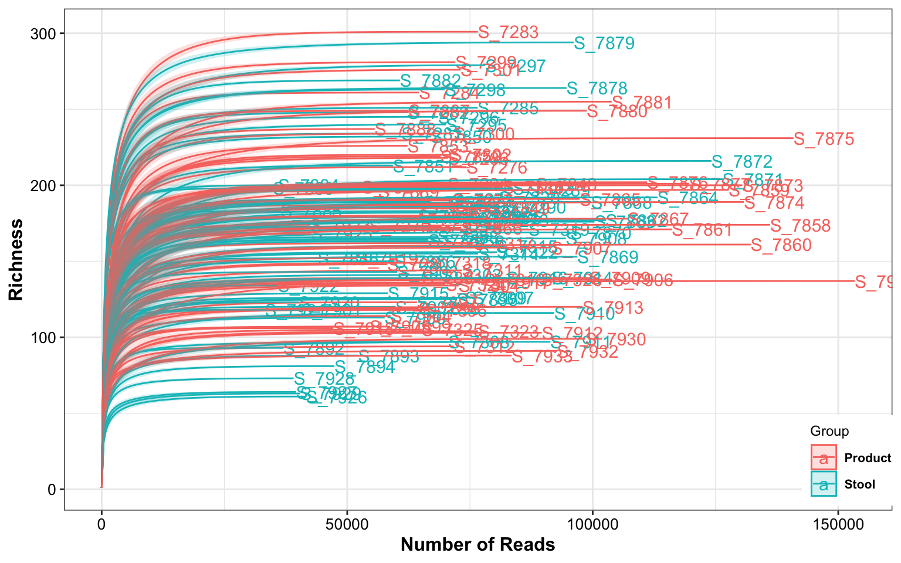
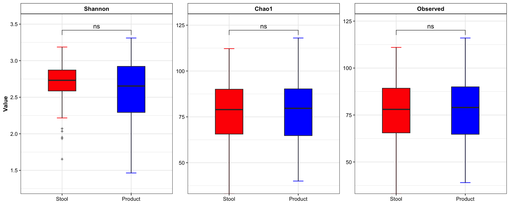
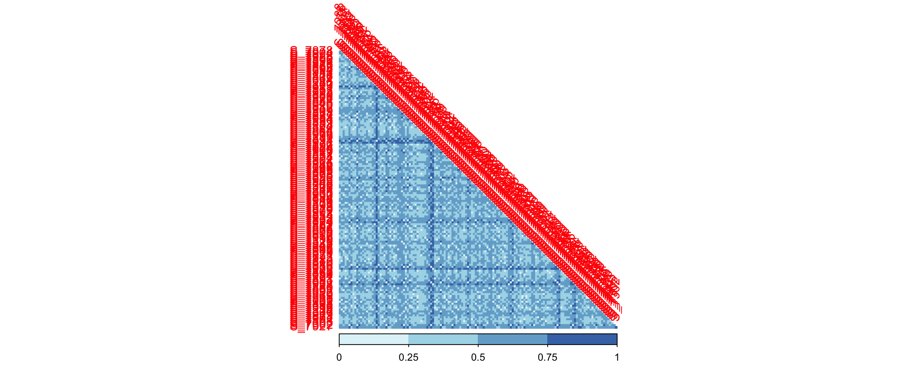
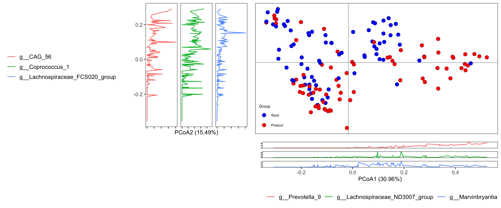
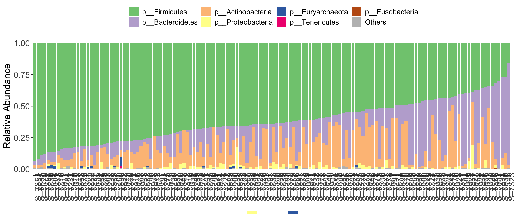
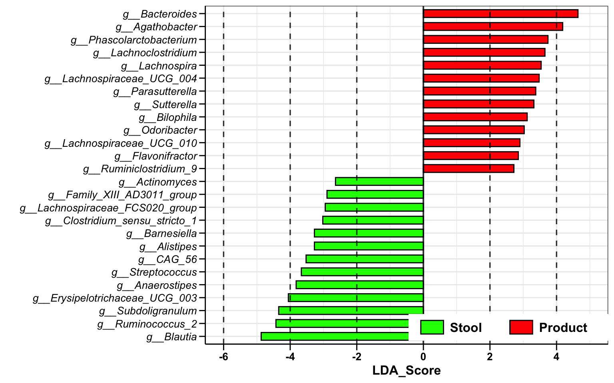
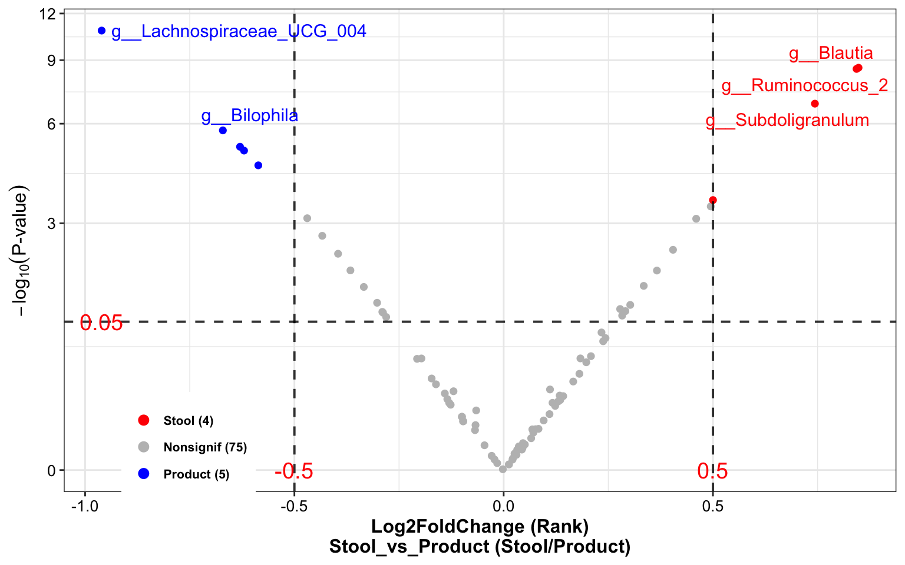

Chapter 10 Test Example
10.2 Loading data
dada2_res <- readRDS("DataSet/RawData/dada2_res.rds")
tree <- phyloseq::read_tree("DataSet/RawData/tree.nwk")
metadata <- readxl::read_xlsx("DataSet/RawData/诺禾宏基因组678月-ZH.xlsx", sheet = 3)
metaphlan2_res <- read.table("DataSet/RawData/merged_metaphlan2.tsv",
header = TRUE, stringsAsFactors = FALSE) %>%
tibble::rownames_to_column("ID")10.3 Metaphlan2 result
metaphlan2_res_list <- import_metaphlan_taxa(data_metaphlan2 = metaphlan2_res,
taxa_level = "Species")
tax_tab <- metaphlan2_res_list$tax_tab
otu_tab <- metaphlan2_res_list$abu_tab
colnames(otu_tab) <- gsub("X", "S_", colnames(otu_tab))
sam_tab <- metadata %>% data.frame() %>%
dplyr::mutate(Group=ifelse(SampleType == "粪便", "Stool",
ifelse(SampleType == "QC", "QC", "Product"))) %>%
dplyr::select(SampleTubeID, Group, everything())
rownames(sam_tab) <- paste0("S_", sam_tab$SeqID_MGS)
overlap_samples <- dplyr::intersect(rownames(sam_tab), colnames(otu_tab))
otu_tab_cln <- otu_tab[, match(overlap_samples, colnames(otu_tab))]
sam_tab_cln <- sam_tab[match(overlap_samples, rownames(sam_tab)), ]
rownames(sam_tab_cln) <- overlap_samples
metaphlan2_ps <- get_metaphlan_phyloseq(
otu_tab = otu_tab_cln,
sam_tab = sam_tab_cln,
tax_tab = tax_tab)
metaphlan2_ps## phyloseq-class experiment-level object
## otu_table() OTU Table: [ 315 taxa and 145 samples ]
## sample_data() Sample Data: [ 145 samples by 12 sample variables ]
## tax_table() Taxonomy Table: [ 315 taxa by 7 taxonomic ranks ]
10.5 Step2: Convert inputs into phyloseq data
tax_tab_16s <- import_dada2_taxa(dada2_taxa = dada2_res$tax_tab)
otu_tab_16s <- dada2_res$seq_tab
# Shouldn't use the Total Number as SampleID (wrong: 123456; right: X123456)
rownames(otu_tab_16s) <- paste0("S_", rownames(otu_tab_16s))
sam_tab_16s <- metadata %>% data.frame() %>%
dplyr::mutate(Group=ifelse(SampleType == "粪便", "Stool",
ifelse(SampleType == "QC", "QC", "Product"))) %>%
dplyr::filter(SampleTubeID %in% sam_tab_cln$SampleTubeID) %>%
dplyr::select(SampleTubeID, Group, everything())
rownames(sam_tab_16s) <- paste0("S_", sam_tab_16s$SeqID_16s)
overlap_samples_16s <- dplyr::intersect(rownames(sam_tab_16s), rownames(otu_tab_16s))
otu_tab_16s_cln <- otu_tab_16s[match(overlap_samples_16s, rownames(otu_tab_16s)), ]
sam_tab_16s_cln <- sam_tab_16s[match(overlap_samples_16s, rownames(sam_tab_16s)), ]
dada2_ps <- get_dada2_phyloseq(
seq_tab = otu_tab_16s_cln,
tax_tab = tax_tab_16s,
sam_tab = sam_tab_16s_cln,
phy_tree = tree)
dada2_ps## phyloseq-class experiment-level object
## otu_table() OTU Table: [ 1948 taxa and 145 samples ]
## sample_data() Sample Data: [ 145 samples by 12 sample variables ]
## tax_table() Taxonomy Table: [ 1948 taxa by 7 taxonomic ranks ]
## phy_tree() Phylogenetic Tree: [ 1948 tips and 1933 internal nodes ]
## refseq() DNAStringSet: [ 1948 reference sequences ]10.6 Step3: BRS checking
dada2_ps <- readRDS("DataSet/Step2/Donor_16s_phyloseq.RDS")
dada2_ps_genus <- summarize_taxa(ps = dada2_ps,
taxa_level = "Genus")
tail(dada2_ps_genus@sam_data %>% data.frame())## SampleTubeID Group Date_Sequencing ProductID SampleType ProductBatch Date_Sampling Date_Receiving SeqID_MGS SeqID_16s
## S_7929 GGM50-210730 Stool 2021-08-03 M50 粪便 CYM50-210735 2021.07.30 2021-08-06 7769 7929
## S_7930 CYM50-210735-0727 Product 2021-08-03 M50 肠菌胶囊 CYM50-210735 2021.07.27 2021-08-06 7770 7930
## S_7931 CYM50-210735-0728 Product 2021-08-03 M50 肠菌胶囊 CYM50-210735 2021.07.28 2021-08-06 7771 7931
## S_7932 CYM50-210735-0729 Product 2021-08-03 M50 肠菌胶囊 CYM50-210735 2021.07.29 2021-08-06 7772 7932
## S_7933 CYM50-210735-0730 Product 2021-08-03 M50 肠菌胶囊 CYM50-210735 2021.07.30 2021-08-06 7773 7933
## S_7327 Community QC <NA> Ref QC <NA> <NA> <NA> 7222 7327
## Pipeline_MGS Pipeline_16s
## S_7929 /share/work/HPC/work_tmp/PipelineJob_180_20210923/output /share/projects/Engineering/pipeline_output/PipelineJob_304_20211203
## S_7930 /share/work/HPC/work_tmp/PipelineJob_180_20210923/output /share/projects/Engineering/pipeline_output/PipelineJob_304_20211203
## S_7931 /share/work/HPC/work_tmp/PipelineJob_180_20210923/output /share/projects/Engineering/pipeline_output/PipelineJob_304_20211203
## S_7932 /share/work/HPC/work_tmp/PipelineJob_180_20210923/output /share/projects/Engineering/pipeline_output/PipelineJob_304_20211203
## S_7933 /share/work/HPC/work_tmp/PipelineJob_180_20210923/output /share/projects/Engineering/pipeline_output/PipelineJob_304_20211203
## S_7327 /share/work/HPC/work_tmp/PipelineJob_180_20210923/output /share/projects/Engineering/pipeline_output/PipelineJob_304_20211203## Noting: the Reference Matrix is for 16s
##
## ############Matched baterica of the BRS sample#############
## The number of BRS' bacteria matched the Reference Matrix is [3]
## g__Lactobacillus
## g__Escherichia_Shigella
## g__Enterococcus
## The number of bacteria unmatched the Reference Matrix is [12]
## g__Bifidobacterium
## g__Bacteroides
## g__Faecalibacterium
## g__Parabacteroides
## g__Collinsella
## g__Coprococcus_3
## g__Dorea
## g__Streptococcus
## g__Roseburia
## g__Anaerostipes
## g__Prevotella_9
## g__Eggerthella
## The number of the additional bacteria compared to the Reference Matrix is [6]
## ###########################################################
##
## ##################Status of the BRS sample##################
## Whether the BRS has the all bateria of Reference Matrix: FALSE
## Correlation Coefficient of the BRS is: 6
## Bray Curtis of the BRS is: 0.2265
## Impurity of Max additional genus (g__Listeria) of the BRS is: 16.94
## ###########################################################
## #####Final Evaluation Results of the BRS #######
## The BRS of sequencing dataset didn't pass the cutoff of the Reference Matrix
## ###########################################################
## Gold_Cutoff BRS
## Coef 0.9067 6.0000
## Bray 0.1597 0.2265
## Impurity(max) 1.0000 16.9400dada2_ps_remove_BRS <- get_GroupPhyloseq(
ps = dada2_ps,
group = "Group",
group_names = "QC",
discard = TRUE)
dada2_ps_remove_BRS
## phyloseq-class experiment-level object
## otu_table() OTU Table: [ 1948 taxa and 144 samples ]
## sample_data() Sample Data: [ 144 samples by 12 sample variables ]
## tax_table() Taxonomy Table: [ 1948 taxa by 7 taxonomic ranks ]
## phy_tree() Phylogenetic Tree: [ 1948 tips and 1933 internal nodes ]
## refseq() DNAStringSet: [ 1948 reference sequences ]
if (!dir.exists("DataSet/Step3/")) {
dir.create("DataSet/Step3/")
}
saveRDS(dada2_ps_remove_BRS, "DataSet/Step3/Donor_16s_phyloseq_remove_BRS.RDS", compress = TRUE)10.7 Step4: Rarefaction curves
dada2_ps_remove_BRS <- readRDS("DataSet/Step3/Donor_16s_phyloseq_remove_BRS.RDS")
plot_RarefCurve(ps = dada2_ps_remove_BRS,
taxa_level = "OTU",
step = 400,
label = "Group",
color = "Group")## rarefying sample S_7271
## rarefying sample S_7272
## rarefying sample S_7273
## rarefying sample S_7274
## rarefying sample S_7275
## rarefying sample S_7276
## rarefying sample S_7277
## rarefying sample S_7278
## rarefying sample S_7279
## rarefying sample S_7280
## rarefying sample S_7281
## rarefying sample S_7282
## rarefying sample S_7283
## rarefying sample S_7284
## rarefying sample S_7285
## rarefying sample S_7286
## rarefying sample S_7287
## rarefying sample S_7288
## rarefying sample S_7289
## rarefying sample S_7290
## rarefying sample S_7291
## rarefying sample S_7292
## rarefying sample S_7293
## rarefying sample S_7294
## rarefying sample S_7295
## rarefying sample S_7296
## rarefying sample S_7297
## rarefying sample S_7298
## rarefying sample S_7299
## rarefying sample S_7300
## rarefying sample S_7301
## rarefying sample S_7302
## rarefying sample S_7303
## rarefying sample S_7304
## rarefying sample S_7305
## rarefying sample S_7306
## rarefying sample S_7307
## rarefying sample S_7308
## rarefying sample S_7309
## rarefying sample S_7310
## rarefying sample S_7311
## rarefying sample S_7312
## rarefying sample S_7313
## rarefying sample S_7314
## rarefying sample S_7315
## rarefying sample S_7316
## rarefying sample S_7317
## rarefying sample S_7318
## rarefying sample S_7319
## rarefying sample S_7320
## rarefying sample S_7321
## rarefying sample S_7322
## rarefying sample S_7323
## rarefying sample S_7324
## rarefying sample S_7325
## rarefying sample S_7326
## rarefying sample S_7846
## rarefying sample S_7847
## rarefying sample S_7848
## rarefying sample S_7849
## rarefying sample S_7850
## rarefying sample S_7851
## rarefying sample S_7852
## rarefying sample S_7853
## rarefying sample S_7854
## rarefying sample S_7855
## rarefying sample S_7856
## rarefying sample S_7857
## rarefying sample S_7858
## rarefying sample S_7859
## rarefying sample S_7860
## rarefying sample S_7861
## rarefying sample S_7862
## rarefying sample S_7863
## rarefying sample S_7864
## rarefying sample S_7865
## rarefying sample S_7866
## rarefying sample S_7867
## rarefying sample S_7868
## rarefying sample S_7869
## rarefying sample S_7870
## rarefying sample S_7871
## rarefying sample S_7872
## rarefying sample S_7873
## rarefying sample S_7874
## rarefying sample S_7875
## rarefying sample S_7876
## rarefying sample S_7877
## rarefying sample S_7878
## rarefying sample S_7879
## rarefying sample S_7880
## rarefying sample S_7881
## rarefying sample S_7882
## rarefying sample S_7883
## rarefying sample S_7884
## rarefying sample S_7885
## rarefying sample S_7886
## rarefying sample S_7887
## rarefying sample S_7888
## rarefying sample S_7889
## rarefying sample S_7890
## rarefying sample S_7891
## rarefying sample S_7892
## rarefying sample S_7893
## rarefying sample S_7894
## rarefying sample S_7895
## rarefying sample S_7896
## rarefying sample S_7897
## rarefying sample S_7898
## rarefying sample S_7899
## rarefying sample S_7900
## rarefying sample S_7901
## rarefying sample S_7902
## rarefying sample S_7903
## rarefying sample S_7904
## rarefying sample S_7905
## rarefying sample S_7906
## rarefying sample S_7907
## rarefying sample S_7908
## rarefying sample S_7909
## rarefying sample S_7910
## rarefying sample S_7911
## rarefying sample S_7912
## rarefying sample S_7913
## rarefying sample S_7914
## rarefying sample S_7915
## rarefying sample S_7916
## rarefying sample S_7917
## rarefying sample S_7918
## rarefying sample S_7919
## rarefying sample S_7920
## rarefying sample S_7921
## rarefying sample S_7922
## rarefying sample S_7923
## rarefying sample S_7924
## rarefying sample S_7925
## rarefying sample S_7926
## rarefying sample S_7927
## rarefying sample S_7928
## rarefying sample S_7929
## rarefying sample S_7930
## rarefying sample S_7931
## rarefying sample S_7932
## rarefying sample S_7933

Figure 10.2: Rarefaction curves (Example)
10.8 Step5: Rarefy otu counts
dada2_ps_remove_BRS <- readRDS("DataSet/Step3/Donor_16s_phyloseq_remove_BRS.RDS")
summarize_phyloseq(ps = dada2_ps_remove_BRS)## [[1]]
## [1] "1] Min. number of reads = 33267"
##
## [[2]]
## [1] "2] Max. number of reads = 153367"
##
## [[3]]
## [1] "3] Total number of reads = 10909876"
##
## [[4]]
## [1] "4] Average number of reads = 75763.0277777778"
##
## [[5]]
## [1] "5] Median number of reads = 71985.5"
##
## [[6]]
## [1] "7] Sparsity = 0.912599104494638"
##
## [[7]]
## [1] "6] Any OTU sum to 1 or less? YES"
##
## [[8]]
## [1] "8] Number of singletons = 837"
##
## [[9]]
## [1] "9] Percent of OTUs that are singletons\n (i.e. exactly one read detected across all samples)0"
##
## [[10]]
## [1] "10] Number of sample variables are: 12"
##
## [[11]]
## [1] "SampleTubeID" "Group" "Date_Sequencing" "ProductID" "SampleType" "ProductBatch" "Date_Sampling"
## [8] "Date_Receiving" "SeqID_MGS" "SeqID_16s" "Pipeline_MGS" "Pipeline_16s"## phyloseq-class experiment-level object
## otu_table() OTU Table: [ 1091 taxa and 144 samples ]
## sample_data() Sample Data: [ 144 samples by 12 sample variables ]
## tax_table() Taxonomy Table: [ 1091 taxa by 7 taxonomic ranks ]
## phy_tree() Phylogenetic Tree: [ 1091 tips and 1086 internal nodes ]
## refseq() DNAStringSet: [ 1091 reference sequences ]10.9 Step6: Extracting specific taxonomic level
dada2_ps_rare <- readRDS("DataSet/Step5/Donor_16s_phyloseq_remove_BRS_rare.RDS")
dada2_ps_rare_genus <- summarize_taxa(ps = dada2_ps_rare,
taxa_level = "Genus")
dada2_ps_rare_genus## phyloseq-class experiment-level object
## otu_table() OTU Table: [ 225 taxa and 144 samples ]
## sample_data() Sample Data: [ 144 samples by 12 sample variables ]
## tax_table() Taxonomy Table: [ 225 taxa by 6 taxonomic ranks ]## phyloseq-class experiment-level object
## otu_table() OTU Table: [ 37 taxa and 144 samples ]
## sample_data() Sample Data: [ 144 samples by 12 sample variables ]
## tax_table() Taxonomy Table: [ 37 taxa by 4 taxonomic ranks ]dada2_ps_rare_phylum <- summarize_taxa(ps = dada2_ps_rare,
taxa_level = "Phylum")
dada2_ps_rare_phylum## phyloseq-class experiment-level object
## otu_table() OTU Table: [ 15 taxa and 144 samples ]
## sample_data() Sample Data: [ 144 samples by 12 sample variables ]
## tax_table() Taxonomy Table: [ 15 taxa by 2 taxonomic ranks ]if (!dir.exists("DataSet/Step6/")) {
dir.create("DataSet/Step6/")
}
saveRDS(dada2_ps_rare_genus, "DataSet/Step6/Donor_16s_phyloseq_remove_BRS_rare_genus.RDS", compress = TRUE)
saveRDS(dada2_ps_rare_order, "DataSet/Step6/Donor_16s_phyloseq_remove_BRS_rare_order.RDS", compress = TRUE)
saveRDS(dada2_ps_rare_phylum, "DataSet/Step6/Donor_16s_phyloseq_remove_BRS_rare_phylum.RDS", compress = TRUE)10.10 Step7: GlobalView
dada2_ps_rare_genus <- readRDS("DataSet/Step6/Donor_16s_phyloseq_remove_BRS_rare_genus.RDS")
# alpha
dada2_ps_rare_genus_alpha <- run_alpha_diversity(ps = dada2_ps_rare_genus,
measures = c("Shannon", "Chao1", "Observed"))
plot_boxplot(data = dada2_ps_rare_genus_alpha,
y_index = c("Shannon", "Chao1", "Observed"),
group = "Group",
group_names = c("Stool", "Product"),
group_color = c("red", "blue"))

Figure 10.3: diversity and ordination and composition(Example)
# beta
dada2_ps_beta <- run_beta_diversity(ps = dada2_ps_rare_genus,
method = "bray")
plot_distance_corrplot(datMatrix = dada2_ps_beta$BetaDistance)

Figure 10.4: diversity and ordination and composition(Example)
# permanova
dada2_ps_per <- run_permanova(ps = dada2_ps_rare_genus,
method = "bray",
columns = "Group")
print(dada2_ps_per)## SumsOfSample Df SumsOfSqs MeanSqs F.Model R2 Pr(>F) AdjustedPvalue
## Group 144 1 1.335187 1.335187 9.669403 0.06375315 0.001 0.001# beta dispersion
beta_df <- run_beta_diversity(ps = dada2_ps_rare_genus,
method = "bray",
group = "Group")##
## Permutation test for homogeneity of multivariate dispersions
## Permutation: free
## Number of permutations: 999
##
## Response: Distances
## Df Sum Sq Mean Sq F N.Perm Pr(>F)
## Groups 1 0.04375 0.043749 5.6785 999 0.016 *
## Residuals 142 1.09402 0.007704
## ---
## Signif. codes: 0 '***' 0.001 '**' 0.01 '*' 0.05 '.' 0.1 ' ' 1
##
## Pairwise comparisons:
## (Observed p-value below diagonal, permuted p-value above diagonal)
## Product Stool
## Product 0.017
## Stool 0.018497# ordination
dada2_ps_ordination <- run_ordination(
ps = dada2_ps_rare_genus,
group = "Group",
method = "PCoA")## [1] "Pvalue of beta dispersion less than 0.05"plot_Ordination(ResultList = dada2_ps_ordination,
group = "Group",
group_names = c("Stool", "Product"),
group_color = c("blue", "red"))

Figure 10.5: diversity and ordination and composition(Example)
# Microbial composition
plot_stacked_bar_XIVZ(
phyloseq = dada2_ps_rare_genus,
level = "Phylum",
feature = "Group")

Figure 10.6: diversity and ordination and composition(Example)
10.11 Step8: Differential Analysis
dada2_ps_rare_genus <- readRDS("DataSet/Step6/Donor_16s_phyloseq_remove_BRS_rare_genus.RDS")
# filter & trim
dada2_ps_rare_genus_filter <- run_filter(ps = dada2_ps_rare_genus,
cutoff = 10,
unclass = TRUE)
dada2_ps_rare_genus_filter_trim <- run_trim(object = dada2_ps_rare_genus_filter,
cutoff = 0.1,
trim = "feature")
dada2_ps_rare_genus_filter_trim## phyloseq-class experiment-level object
## otu_table() OTU Table: [ 84 taxa and 144 samples ]
## sample_data() Sample Data: [ 144 samples by 12 sample variables ]
## tax_table() Taxonomy Table: [ 84 taxa by 6 taxonomic ranks ]# lefse
# dada2_ps_lefse <- run_lefse(
# ps = dada2_ps_rare_genus_filter_trim,
# group = "Group",
# group_names = c("Stool", "Product"),
# norm = "CPM",
# Lda = 2)
dada2_ps_lefse <- run_lefse2(
ps = dada2_ps_rare_genus_filter_trim,
group = "Group",
group_names = c("Stool", "Product"),
norm = "CPM",
lda_cutoff = 2)
# # don't run this code when you do lefse in reality
# dada2_ps_lefse$LDA_Score <- dada2_ps_lefse$LDA_Score * 1000
plot_lefse(
da_res = dada2_ps_lefse,
x_index = "LDA_Score",
x_index_cutoff = 2,
group_color = c("green", "red"))

Figure 10.7: Differential Analysis (Example)
dada2_ps_wilcox <- run_wilcox(
ps = dada2_ps_rare_genus_filter_trim,
group = "Group",
group_names = c("Stool", "Product"))
plot_volcano(
da_res = dada2_ps_wilcox,
group_names = c("Stool", "Product"),
x_index = "Log2FoldChange (Rank)\nStool_vs_Product",
x_index_cutoff = 0.5,
y_index = "Pvalue",
y_index_cutoff = 0.05,
group_color = c("red", "grey", "blue"),
topN = 5)

Figure 10.8: Differential Analysis (Example)
10.12 Systematic Information
## ─ Session info ───────────────────────────────────────────────────────────────────────────────────────────────────────────────────────────────
## setting value
## version R version 4.1.3 (2022-03-10)
## os macOS Monterey 12.2.1
## system x86_64, darwin17.0
## ui RStudio
## language (EN)
## collate en_US.UTF-8
## ctype en_US.UTF-8
## tz Asia/Shanghai
## date 2023-10-27
## rstudio 2023.09.0+463 Desert Sunflower (desktop)
## pandoc 3.1.1 @ /Applications/RStudio.app/Contents/Resources/app/quarto/bin/tools/ (via rmarkdown)
##
## ─ Packages ───────────────────────────────────────────────────────────────────────────────────────────────────────────────────────────────────
## package * version date (UTC) lib source
## abind 1.4-5 2016-07-21 [2] CRAN (R 4.1.0)
## ade4 1.7-22 2023-02-06 [2] CRAN (R 4.1.2)
## ALDEx2 1.30.0 2022-11-01 [2] Bioconductor
## annotate 1.72.0 2021-10-26 [2] Bioconductor
## AnnotationDbi 1.60.2 2023-03-10 [2] Bioconductor
## ape * 5.7-1 2023-03-13 [2] CRAN (R 4.1.2)
## askpass 1.1 2019-01-13 [2] CRAN (R 4.1.0)
## backports 1.4.1 2021-12-13 [2] CRAN (R 4.1.0)
## base64enc 0.1-3 2015-07-28 [2] CRAN (R 4.1.0)
## bayesm 3.1-5 2022-12-02 [2] CRAN (R 4.1.2)
## Biobase * 2.54.0 2021-10-26 [2] Bioconductor
## BiocGenerics * 0.40.0 2021-10-26 [2] Bioconductor
## BiocParallel 1.28.3 2021-12-09 [2] Bioconductor
## biomformat 1.22.0 2021-10-26 [2] Bioconductor
## Biostrings 2.62.0 2021-10-26 [2] Bioconductor
## bit 4.0.5 2022-11-15 [2] CRAN (R 4.1.2)
## bit64 4.0.5 2020-08-30 [2] CRAN (R 4.1.0)
## bitops 1.0-7 2021-04-24 [2] CRAN (R 4.1.0)
## blob 1.2.4 2023-03-17 [2] CRAN (R 4.1.2)
## bookdown 0.34 2023-05-09 [2] CRAN (R 4.1.2)
## broom 1.0.5 2023-06-09 [2] CRAN (R 4.1.3)
## bslib 0.5.0 2023-06-09 [2] CRAN (R 4.1.3)
## cachem 1.0.8 2023-05-01 [2] CRAN (R 4.1.2)
## callr 3.7.3 2022-11-02 [2] CRAN (R 4.1.2)
## car 3.1-2 2023-03-30 [2] CRAN (R 4.1.2)
## carData 3.0-5 2022-01-06 [2] CRAN (R 4.1.2)
## caTools 1.18.2 2021-03-28 [2] CRAN (R 4.1.0)
## cccd 1.6 2022-04-08 [2] CRAN (R 4.1.2)
## cellranger 1.1.0 2016-07-27 [2] CRAN (R 4.1.0)
## checkmate 2.2.0 2023-04-27 [2] CRAN (R 4.1.2)
## class 7.3-22 2023-05-03 [2] CRAN (R 4.1.2)
## classInt 0.4-9 2023-02-28 [2] CRAN (R 4.1.2)
## cli 3.6.1 2023-03-23 [2] CRAN (R 4.1.2)
## cluster 2.1.4 2022-08-22 [2] CRAN (R 4.1.2)
## coda 0.19-4 2020-09-30 [2] CRAN (R 4.1.0)
## codetools 0.2-19 2023-02-01 [2] CRAN (R 4.1.2)
## coin 1.4-2 2021-10-08 [2] CRAN (R 4.1.0)
## colorspace 2.1-0 2023-01-23 [2] CRAN (R 4.1.2)
## compositions 2.0-6 2023-04-13 [2] CRAN (R 4.1.2)
## conflicted * 1.2.0 2023-02-01 [2] CRAN (R 4.1.2)
## corpcor 1.6.10 2021-09-16 [2] CRAN (R 4.1.0)
## corrplot 0.92 2021-11-18 [2] CRAN (R 4.1.0)
## cowplot 1.1.1 2020-12-30 [2] CRAN (R 4.1.0)
## crayon 1.5.2 2022-09-29 [2] CRAN (R 4.1.2)
## crosstalk 1.2.0 2021-11-04 [2] CRAN (R 4.1.0)
## data.table 1.14.8 2023-02-17 [2] CRAN (R 4.1.2)
## DBI 1.1.3 2022-06-18 [2] CRAN (R 4.1.2)
## DelayedArray 0.20.0 2021-10-26 [2] Bioconductor
## deldir 1.0-9 2023-05-17 [2] CRAN (R 4.1.3)
## DEoptimR 1.0-14 2023-06-09 [2] CRAN (R 4.1.3)
## DESeq2 1.34.0 2021-10-26 [2] Bioconductor
## devtools * 2.4.5 2022-10-11 [2] CRAN (R 4.1.2)
## digest 0.6.33 2023-07-07 [1] CRAN (R 4.1.3)
## doParallel 1.0.17 2022-02-07 [2] CRAN (R 4.1.2)
## doSNOW 1.0.20 2022-02-04 [2] CRAN (R 4.1.2)
## dplyr * 1.1.2 2023-04-20 [2] CRAN (R 4.1.2)
## DT 0.28 2023-05-18 [2] CRAN (R 4.1.3)
## dynamicTreeCut 1.63-1 2016-03-11 [2] CRAN (R 4.1.0)
## e1071 1.7-13 2023-02-01 [2] CRAN (R 4.1.2)
## edgeR 3.36.0 2021-10-26 [2] Bioconductor
## ellipsis 0.3.2 2021-04-29 [2] CRAN (R 4.1.0)
## emmeans 1.8.7 2023-06-23 [1] CRAN (R 4.1.3)
## estimability 1.4.1 2022-08-05 [2] CRAN (R 4.1.2)
## evaluate 0.21 2023-05-05 [2] CRAN (R 4.1.2)
## FactoMineR 2.8 2023-03-27 [2] CRAN (R 4.1.2)
## fansi 1.0.4 2023-01-22 [2] CRAN (R 4.1.2)
## farver 2.1.1 2022-07-06 [2] CRAN (R 4.1.2)
## fastcluster 1.2.3 2021-05-24 [2] CRAN (R 4.1.0)
## fastmap 1.1.1 2023-02-24 [2] CRAN (R 4.1.2)
## fdrtool 1.2.17 2021-11-13 [2] CRAN (R 4.1.0)
## filematrix 1.3 2018-02-27 [2] CRAN (R 4.1.0)
## flashClust 1.01-2 2012-08-21 [2] CRAN (R 4.1.0)
## FNN 1.1.3.2 2023-03-20 [2] CRAN (R 4.1.2)
## foreach 1.5.2 2022-02-02 [2] CRAN (R 4.1.2)
## foreign 0.8-84 2022-12-06 [2] CRAN (R 4.1.2)
## forestplot 3.1.1 2022-12-06 [2] CRAN (R 4.1.2)
## formatR 1.14 2023-01-17 [2] CRAN (R 4.1.2)
## Formula 1.2-5 2023-02-24 [2] CRAN (R 4.1.2)
## fs 1.6.2 2023-04-25 [2] CRAN (R 4.1.2)
## futile.logger * 1.4.3 2016-07-10 [2] CRAN (R 4.1.0)
## futile.options 1.0.1 2018-04-20 [2] CRAN (R 4.1.0)
## genefilter 1.76.0 2021-10-26 [2] Bioconductor
## geneplotter 1.72.0 2021-10-26 [2] Bioconductor
## generics 0.1.3 2022-07-05 [2] CRAN (R 4.1.2)
## GenomeInfoDb * 1.30.1 2022-01-30 [2] Bioconductor
## GenomeInfoDbData 1.2.7 2022-03-09 [2] Bioconductor
## GenomicRanges * 1.46.1 2021-11-18 [2] Bioconductor
## ggiraph 0.8.7 2023-03-17 [2] CRAN (R 4.1.2)
## ggiraphExtra 0.3.0 2020-10-06 [2] CRAN (R 4.1.2)
## ggplot2 * 3.4.2 2023-04-03 [2] CRAN (R 4.1.2)
## ggpubr * 0.6.0 2023-02-10 [2] CRAN (R 4.1.2)
## ggrepel 0.9.3 2023-02-03 [2] CRAN (R 4.1.2)
## ggsci 3.0.0 2023-03-08 [2] CRAN (R 4.1.2)
## ggsignif 0.6.4 2022-10-13 [2] CRAN (R 4.1.2)
## ggVennDiagram 1.2.2 2022-09-08 [2] CRAN (R 4.1.2)
## glasso 1.11 2019-10-01 [2] CRAN (R 4.1.0)
## glmnet 4.1-7 2023-03-23 [2] CRAN (R 4.1.2)
## glue * 1.6.2 2022-02-24 [2] CRAN (R 4.1.2)
## Gmisc * 3.0.2 2023-03-13 [2] CRAN (R 4.1.2)
## GO.db 3.14.0 2022-04-11 [2] Bioconductor
## gplots 3.1.3 2022-04-25 [2] CRAN (R 4.1.2)
## gridExtra 2.3 2017-09-09 [2] CRAN (R 4.1.0)
## gtable 0.3.3 2023-03-21 [2] CRAN (R 4.1.2)
## gtools 3.9.4 2022-11-27 [2] CRAN (R 4.1.2)
## highr 0.10 2022-12-22 [2] CRAN (R 4.1.2)
## Hmisc 5.1-0 2023-05-08 [2] CRAN (R 4.1.2)
## hms 1.1.3 2023-03-21 [2] CRAN (R 4.1.2)
## htmlTable * 2.4.1 2022-07-07 [2] CRAN (R 4.1.2)
## htmltools 0.5.5 2023-03-23 [2] CRAN (R 4.1.2)
## htmlwidgets 1.6.2 2023-03-17 [2] CRAN (R 4.1.2)
## httpuv 1.6.11 2023-05-11 [2] CRAN (R 4.1.3)
## httr 1.4.6 2023-05-08 [2] CRAN (R 4.1.2)
## huge 1.3.5 2021-06-30 [2] CRAN (R 4.1.0)
## igraph 1.5.0 2023-06-16 [1] CRAN (R 4.1.3)
## impute 1.68.0 2021-10-26 [2] Bioconductor
## insight 0.19.3 2023-06-29 [2] CRAN (R 4.1.3)
## IRanges * 2.28.0 2021-10-26 [2] Bioconductor
## irlba 2.3.5.1 2022-10-03 [2] CRAN (R 4.1.2)
## iterators 1.0.14 2022-02-05 [2] CRAN (R 4.1.2)
## jpeg 0.1-10 2022-11-29 [2] CRAN (R 4.1.2)
## jquerylib 0.1.4 2021-04-26 [2] CRAN (R 4.1.0)
## jsonlite 1.8.7 2023-06-29 [2] CRAN (R 4.1.3)
## kableExtra 1.3.4 2021-02-20 [2] CRAN (R 4.1.2)
## KEGGREST 1.34.0 2021-10-26 [2] Bioconductor
## KernSmooth 2.23-22 2023-07-10 [2] CRAN (R 4.1.3)
## knitr 1.43 2023-05-25 [2] CRAN (R 4.1.3)
## labeling 0.4.2 2020-10-20 [2] CRAN (R 4.1.0)
## lambda.r 1.2.4 2019-09-18 [2] CRAN (R 4.1.0)
## later 1.3.1 2023-05-02 [2] CRAN (R 4.1.2)
## lattice * 0.21-8 2023-04-05 [2] CRAN (R 4.1.2)
## lavaan 0.6-15 2023-03-14 [2] CRAN (R 4.1.2)
## leaps 3.1 2020-01-16 [2] CRAN (R 4.1.0)
## libcoin 1.0-9 2021-09-27 [2] CRAN (R 4.1.0)
## lifecycle 1.0.3 2022-10-07 [2] CRAN (R 4.1.2)
## limma 3.50.3 2022-04-07 [2] Bioconductor
## locfit 1.5-9.8 2023-06-11 [2] CRAN (R 4.1.3)
## LOCOM 1.1 2022-08-05 [2] Github (yijuanhu/LOCOM@c181e0f)
## lubridate 1.9.2 2023-02-10 [2] CRAN (R 4.1.2)
## magrittr * 2.0.3 2022-03-30 [2] CRAN (R 4.1.2)
## MASS 7.3-60 2023-05-04 [2] CRAN (R 4.1.2)
## Matrix 1.6-0 2023-07-08 [2] CRAN (R 4.1.3)
## MatrixGenerics * 1.6.0 2021-10-26 [2] Bioconductor
## matrixStats * 1.0.0 2023-06-02 [2] CRAN (R 4.1.3)
## mbzinb 0.2 2022-03-16 [2] local
## memoise 2.0.1 2021-11-26 [2] CRAN (R 4.1.0)
## metagenomeSeq 1.36.0 2021-10-26 [2] Bioconductor
## mgcv 1.8-42 2023-03-02 [2] CRAN (R 4.1.2)
## microbiome 1.16.0 2021-10-26 [2] Bioconductor
## mime 0.12 2021-09-28 [2] CRAN (R 4.1.0)
## miniUI 0.1.1.1 2018-05-18 [2] CRAN (R 4.1.0)
## mixedCCA 1.6.2 2022-09-09 [2] CRAN (R 4.1.2)
## mnormt 2.1.1 2022-09-26 [2] CRAN (R 4.1.2)
## modeltools 0.2-23 2020-03-05 [2] CRAN (R 4.1.0)
## multcomp 1.4-25 2023-06-20 [2] CRAN (R 4.1.3)
## multcompView 0.1-9 2023-04-09 [2] CRAN (R 4.1.2)
## multtest 2.50.0 2021-10-26 [2] Bioconductor
## munsell 0.5.0 2018-06-12 [2] CRAN (R 4.1.0)
## mvtnorm 1.2-2 2023-06-08 [2] CRAN (R 4.1.3)
## mycor 0.1.1 2018-04-10 [2] CRAN (R 4.1.0)
## NADA 1.6-1.1 2020-03-22 [2] CRAN (R 4.1.0)
## NetCoMi * 1.0.3 2022-07-14 [2] Github (stefpeschel/NetCoMi@d4d80d3)
## nlme * 3.1-162 2023-01-31 [2] CRAN (R 4.1.2)
## nnet 7.3-19 2023-05-03 [2] CRAN (R 4.1.2)
## openssl 2.0.6 2023-03-09 [2] CRAN (R 4.1.2)
## pbapply 1.7-2 2023-06-27 [2] CRAN (R 4.1.3)
## pbivnorm 0.6.0 2015-01-23 [2] CRAN (R 4.1.0)
## pcaPP 2.0-3 2022-10-24 [2] CRAN (R 4.1.2)
## permute * 0.9-7 2022-01-27 [2] CRAN (R 4.1.2)
## pheatmap * 1.0.12 2019-01-04 [2] CRAN (R 4.1.0)
## phyloseq * 1.38.0 2021-10-26 [2] Bioconductor
## picante * 1.8.2 2020-06-10 [2] CRAN (R 4.1.0)
## pillar 1.9.0 2023-03-22 [2] CRAN (R 4.1.2)
## pkgbuild 1.4.2 2023-06-26 [2] CRAN (R 4.1.3)
## pkgconfig 2.0.3 2019-09-22 [2] CRAN (R 4.1.0)
## pkgload 1.3.2.1 2023-07-08 [2] CRAN (R 4.1.3)
## plyr 1.8.8 2022-11-11 [2] CRAN (R 4.1.2)
## png 0.1-8 2022-11-29 [2] CRAN (R 4.1.2)
## ppcor 1.1 2015-12-03 [2] CRAN (R 4.1.0)
## preprocessCore 1.56.0 2021-10-26 [2] Bioconductor
## prettyunits 1.1.1 2020-01-24 [2] CRAN (R 4.1.0)
## processx 3.8.2 2023-06-30 [2] CRAN (R 4.1.3)
## profvis 0.3.8 2023-05-02 [2] CRAN (R 4.1.2)
## promises 1.2.0.1 2021-02-11 [2] CRAN (R 4.1.0)
## protoclust 1.6.4 2022-04-01 [2] CRAN (R 4.1.2)
## proxy 0.4-27 2022-06-09 [2] CRAN (R 4.1.2)
## ps 1.7.5 2023-04-18 [2] CRAN (R 4.1.2)
## pscl 1.5.5.1 2023-05-10 [2] CRAN (R 4.1.2)
## psych 2.3.6 2023-06-21 [2] CRAN (R 4.1.3)
## pulsar 0.3.10 2023-01-26 [2] CRAN (R 4.1.2)
## purrr * 1.0.1 2023-01-10 [2] CRAN (R 4.1.2)
## qgraph 1.9.5 2023-05-16 [2] CRAN (R 4.1.3)
## quadprog 1.5-8 2019-11-20 [2] CRAN (R 4.1.0)
## qvalue 2.26.0 2021-10-26 [2] Bioconductor
## R6 2.5.1 2021-08-19 [2] CRAN (R 4.1.0)
## RAIDA 1.0 2022-03-14 [2] local
## rbibutils 2.2.13 2023-01-13 [2] CRAN (R 4.1.2)
## RColorBrewer * 1.1-3 2022-04-03 [2] CRAN (R 4.1.2)
## Rcpp * 1.0.11 2023-07-06 [1] CRAN (R 4.1.3)
## RcppZiggurat 0.1.6 2020-10-20 [2] CRAN (R 4.1.0)
## RCurl 1.98-1.12 2023-03-27 [2] CRAN (R 4.1.2)
## Rdpack 2.4 2022-07-20 [2] CRAN (R 4.1.2)
## readr * 2.1.4 2023-02-10 [2] CRAN (R 4.1.2)
## readxl * 1.4.3 2023-07-06 [2] CRAN (R 4.1.3)
## remotes 2.4.2 2021-11-30 [2] CRAN (R 4.1.0)
## reshape2 1.4.4 2020-04-09 [2] CRAN (R 4.1.0)
## reticulate 1.30 2023-06-09 [2] CRAN (R 4.1.3)
## Rfast 2.0.8 2023-07-03 [2] CRAN (R 4.1.3)
## rhdf5 2.38.1 2022-03-10 [2] Bioconductor
## rhdf5filters 1.6.0 2021-10-26 [2] Bioconductor
## Rhdf5lib 1.16.0 2021-10-26 [2] Bioconductor
## rlang 1.1.1 2023-04-28 [1] CRAN (R 4.1.2)
## rmarkdown 2.23 2023-07-01 [2] CRAN (R 4.1.3)
## robustbase 0.99-0 2023-06-16 [2] CRAN (R 4.1.3)
## rootSolve 1.8.2.3 2021-09-29 [2] CRAN (R 4.1.0)
## rpart 4.1.19 2022-10-21 [2] CRAN (R 4.1.2)
## RSpectra 0.16-1 2022-04-24 [2] CRAN (R 4.1.2)
## RSQLite 2.3.1 2023-04-03 [2] CRAN (R 4.1.2)
## rstatix 0.7.2 2023-02-01 [2] CRAN (R 4.1.2)
## rstudioapi 0.15.0 2023-07-07 [2] CRAN (R 4.1.3)
## Rtsne 0.16 2022-04-17 [2] CRAN (R 4.1.2)
## RVenn 1.1.0 2019-07-18 [2] CRAN (R 4.1.0)
## rvest 1.0.3 2022-08-19 [2] CRAN (R 4.1.2)
## S4Vectors * 0.32.4 2022-03-29 [2] Bioconductor
## sandwich 3.0-2 2022-06-15 [2] CRAN (R 4.1.2)
## sass 0.4.6 2023-05-03 [2] CRAN (R 4.1.2)
## scales 1.2.1 2022-08-20 [2] CRAN (R 4.1.2)
## scatterplot3d 0.3-44 2023-05-05 [2] CRAN (R 4.1.2)
## sessioninfo 1.2.2 2021-12-06 [2] CRAN (R 4.1.0)
## sf 1.0-7 2022-03-07 [2] CRAN (R 4.1.2)
## shape 1.4.6 2021-05-19 [2] CRAN (R 4.1.0)
## shiny 1.7.4.1 2023-07-06 [2] CRAN (R 4.1.3)
## sjlabelled 1.2.0 2022-04-10 [2] CRAN (R 4.1.2)
## sjmisc 2.8.9 2021-12-03 [2] CRAN (R 4.1.0)
## snow 0.4-4 2021-10-27 [2] CRAN (R 4.1.0)
## SpiecEasi * 1.1.2 2022-07-14 [2] Github (zdk123/SpiecEasi@c463727)
## SPRING 1.0.4 2022-08-03 [2] Github (GraceYoon/SPRING@3d641a4)
## stringi 1.7.12 2023-01-11 [2] CRAN (R 4.1.2)
## stringr 1.5.0 2022-12-02 [2] CRAN (R 4.1.2)
## SummarizedExperiment * 1.24.0 2021-10-26 [2] Bioconductor
## survival 3.5-5 2023-03-12 [2] CRAN (R 4.1.2)
## svglite 2.1.1 2023-01-10 [2] CRAN (R 4.1.2)
## systemfonts 1.0.4 2022-02-11 [2] CRAN (R 4.1.2)
## tensorA 0.36.2 2020-11-19 [2] CRAN (R 4.1.0)
## TH.data 1.1-2 2023-04-17 [2] CRAN (R 4.1.2)
## tibble * 3.2.1 2023-03-20 [2] CRAN (R 4.1.2)
## tidyr * 1.3.0 2023-01-24 [2] CRAN (R 4.1.2)
## tidyselect 1.2.0 2022-10-10 [2] CRAN (R 4.1.2)
## timechange 0.2.0 2023-01-11 [2] CRAN (R 4.1.2)
## truncnorm 1.0-9 2023-03-20 [2] CRAN (R 4.1.2)
## tzdb 0.4.0 2023-05-12 [2] CRAN (R 4.1.3)
## umap 0.2.10.0 2023-02-01 [2] CRAN (R 4.1.2)
## units 0.8-2 2023-04-27 [2] CRAN (R 4.1.2)
## urlchecker 1.0.1 2021-11-30 [2] CRAN (R 4.1.0)
## usethis * 2.2.2 2023-07-06 [2] CRAN (R 4.1.3)
## utf8 1.2.3 2023-01-31 [2] CRAN (R 4.1.2)
## uuid 1.1-0 2022-04-19 [2] CRAN (R 4.1.2)
## vctrs 0.6.3 2023-06-14 [1] CRAN (R 4.1.3)
## vegan * 2.6-4 2022-10-11 [2] CRAN (R 4.1.2)
## VennDiagram * 1.7.3 2022-04-12 [2] CRAN (R 4.1.2)
## VGAM 1.1-8 2023-03-09 [2] CRAN (R 4.1.2)
## viridis * 0.6.3 2023-05-03 [2] CRAN (R 4.1.2)
## viridisLite * 0.4.2 2023-05-02 [2] CRAN (R 4.1.2)
## vroom 1.6.3 2023-04-28 [2] CRAN (R 4.1.2)
## webshot 0.5.5 2023-06-26 [2] CRAN (R 4.1.3)
## WGCNA 1.72-1 2023-01-18 [2] CRAN (R 4.1.2)
## withr 2.5.0 2022-03-03 [2] CRAN (R 4.1.2)
## Wrench 1.12.0 2021-10-26 [2] Bioconductor
## xfun 0.40 2023-08-09 [1] CRAN (R 4.1.3)
## XMAS2 * 2.2.0 2023-10-27 [1] local
## XML 3.99-0.14 2023-03-19 [2] CRAN (R 4.1.2)
## xml2 1.3.5 2023-07-06 [2] CRAN (R 4.1.3)
## xtable 1.8-4 2019-04-21 [2] CRAN (R 4.1.0)
## XVector 0.34.0 2021-10-26 [2] Bioconductor
## yaml 2.3.7 2023-01-23 [2] CRAN (R 4.1.2)
## zCompositions 1.4.0-1 2022-03-26 [2] CRAN (R 4.1.2)
## zlibbioc 1.40.0 2021-10-26 [2] Bioconductor
## zoo 1.8-12 2023-04-13 [2] CRAN (R 4.1.2)
##
## [1] /Users/zouhua/Library/R/x86_64/4.1/library
## [2] /Library/Frameworks/R.framework/Versions/4.1/Resources/library
##
## ──────────────────────────────────────────────────────────────────────────────────────────────────────────────────────────────────────────────